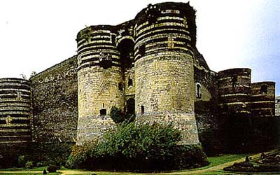

Анжер, лежащий на берегах реки Майен, с древнейших времен был занят племенами гордых кельтов, упорно сопротивлявшихся вторжению римлян. В IX веке, по прошествии долгих лет набегов норманнов, Фульк Нерра, граф Анжуйский, воздвиг здесь укрепленный замок.
В 1228-1238 гг. Святой Людовик добавил к замку целый комплекс фортификаций. Впоследствии этот ансамбль был еще более расширен при Людовике I, герцоге Анжуйском, и при Людовике II, который приказал здесь построить готическую капеллу.
Одно время Анжер был резиденцией "доброго короля" Рене Анжуйского, одновременно короля Сицилии и Иерусалима, который вошел в историю как благодетель своих подданных и блестящий литератор; он любил праздники, турниры и часто устраивал в замке рыцарские ристалища.
Старинная рукопись, иллюстрированная миниатюрами, автором которой был сам король Рене, показывает нам ту пышность, с которой проводились турниры в замке Анжер, где были устроены также вольеры и зверинцы для экзотических животных.